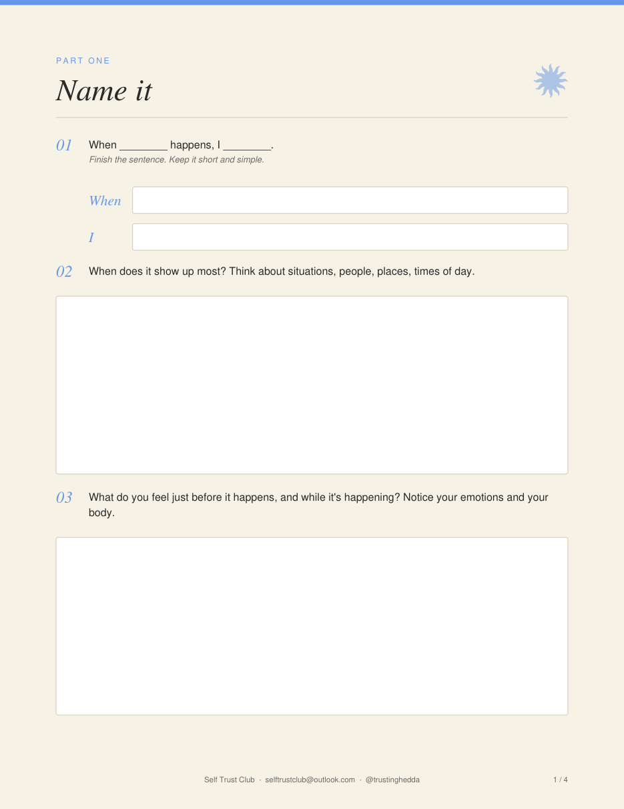
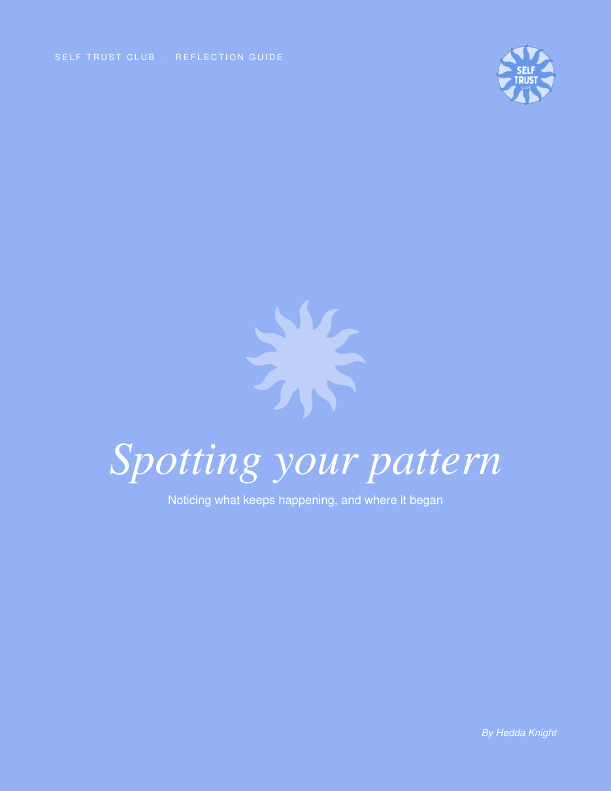

There's something you keep thinking, doing or believing that doesn't feel like you, but it keeps happening anyway. This guide helps you notice it, name it, and gently trace it back to where it began.
Download the free guideFillable PDF · 7 pages · Type straight into it


"Who am I to do this? Someone else could do it better."
Saying yes when everything in you wanted to say no.
"I have to earn my rest. I have to earn being liked."
These patterns aren't flaws. Most of them were learned for a good reason, often a long time ago. But what once protected you can start holding you back. And you can't change what you haven't noticed yet.
Find a quiet moment and a cup of tea. Write the first thing that comes up. There are no right answers here, only honest ones.
Put words to the pattern. When does it show up, and what do you feel just before it happens?
Notice what you tell yourself in the moment, what it's costing you, and what it might be trying to protect.
Trace it back. The first time you remember it, who you learned it from, and how it helped you back then.
Ask whose voice it really is, and imagine what you'd think, do or believe if it were gone.
Most people never pause long enough to see what's running underneath. This guide gives you the space to do exactly that.
Download the free guideOpen it in Preview, Adobe Reader or your browser to type into it.
I'm Hedda, mindset coach, NLP practitioner and founder of The Self Trust Club. In 1-on-1 coaching sessions, we work directly with the subconscious: we find what your pattern has been trying to do for you, honour it, and create a new response that fits who you are now.
You don't have to figure it all out on your own.
Work with me